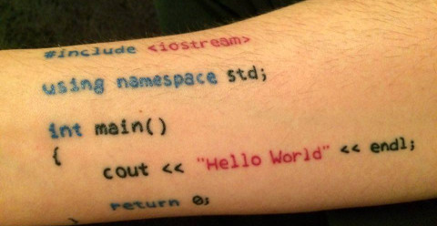

APS1 - Utilizando std::vector (C++/STL)
Contato
- Jean Paulo Martins (jeanmartins utfpr edu br)
- Sala 105, Bloco S (UTFPR - Campus Pato Branco)
Conteúdo
C++/vector

A estrutura de vetores dinâmicos é de grande utilidade pois abstrai do programador a necessidade de gerenciar o crescimento da região de memória necessária.
Um ponto negativo quanto a utilização de vector é a maior complexidade das estruturas que precisam ser mantidas. Ou seja, um vetor simples (int* v) de capacidade $n$ ocupará menos espaço na memória que um vector de mesma capacidade.
Atualmente, no entanto, devido à grande disponibilidade de memória, essa diferença nem sempre é suficiente para que se opte pela utilização da estrutura simples. Por outro lado, os benefícios de se utilizar vector nem sempre são necessários, e nesses casos um int* seria preferível.
Aqui descreveremos brevemente como a APS1 - Implementando vector poderia ser implementada utilizando a classe vector de C++/STL.
Inicialização e Finalização
Para testar os códigos a seguir é necessário utilizarmos o compilador de C++ (g++).
Para utilizarmos as funcionalidades de vector é necessário incluirmos o arquivo de cabeçalho
#include <vector>
using namespace std;
Para definirmos uma estrutura do tipo vector capaz de armazenar inteiros, declaramos uma variável da seguinte forma:
int main() {
vector<int> v; // um vetor dinâmico de inteiros
...
A memória internamente alocada por v será desalocada automaticamente ao fim da função main, portanto, não precisamos explicitamente chamar liberar a memória.
Acesso e manipulação
Inserção
A função a seguir, insere um item no final do vetor
//vector_push_back(v, value);
v.push_back(value);
/* Exemplo:
v = 4 5 7 19 2 1
push_back 5
v = 4 5 7 19 2 1 5
*/
Suponha agora que queiramos inserir um elemento no vetor em uma dada posição que não seja o fim. Chamaremos essa função:
//vector_insert(v, value, i);
v.insert(v.begin() + i, value);
/* Exemplo:
v = 4 5 7 19 2 1
vector_insert 5 3
v = 4 5 7 5 19 2 1
*/
A qual recebe um ponteiro para a posição na qual queremos inserir value. Neste caso v.begin() nos dá um ponteiro para o primeiro elemento de v, portanto v.begin() + i refere a $i$-ésima posição.
Diferentemente de nossa implementação de vector, a versão de C++ não possui uma função push_front. No entanto é óbvio que podemos utilizar a função inser para essa funcionalidade.
//vector_insert(v, value, 0);
v.insert(v.begin(), value);
Remoção
De forma análoga às funções de inserção, temos as funções para remoção de elementos do vetor.
//vector_pop_back(vector* v);
v.pop_back();
//vector_erase(v, int i);
v.erase(v.begin() + i);
//vector_pop_front(vector* v);
v.erase(v.begin());
Exercício
Utilize vector para solucionar a APS1 no hackerrank.